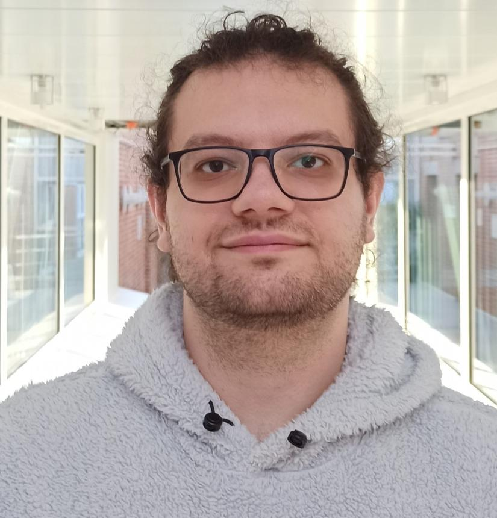
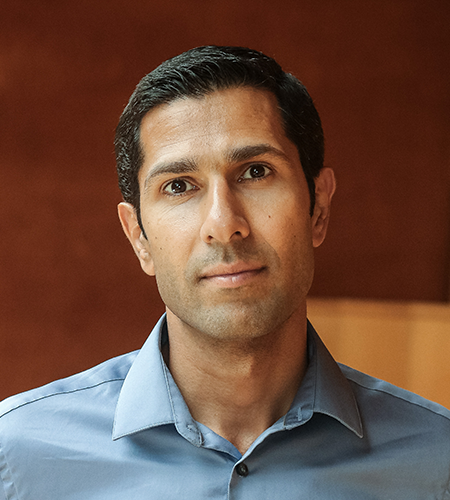
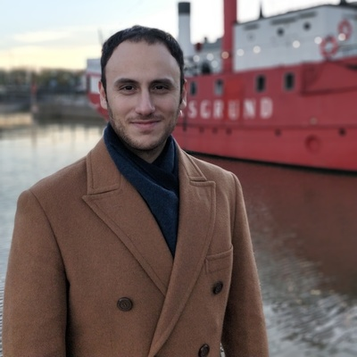
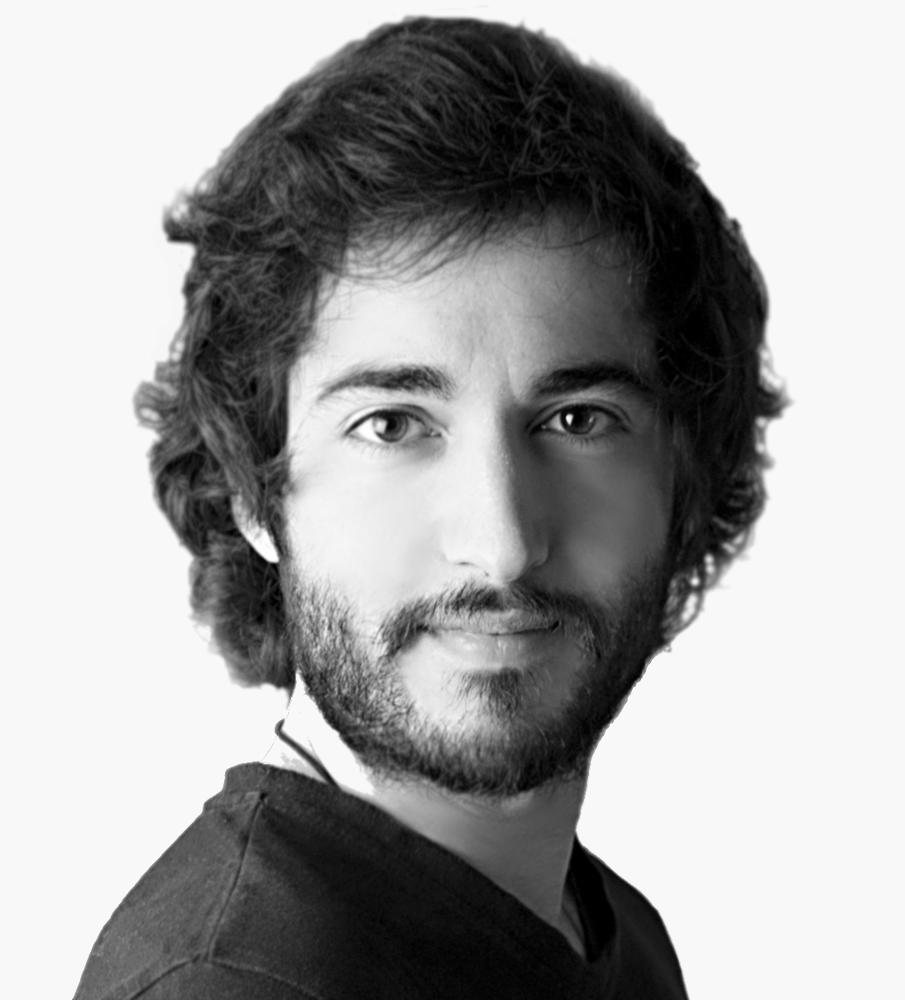
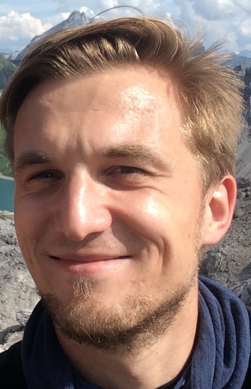
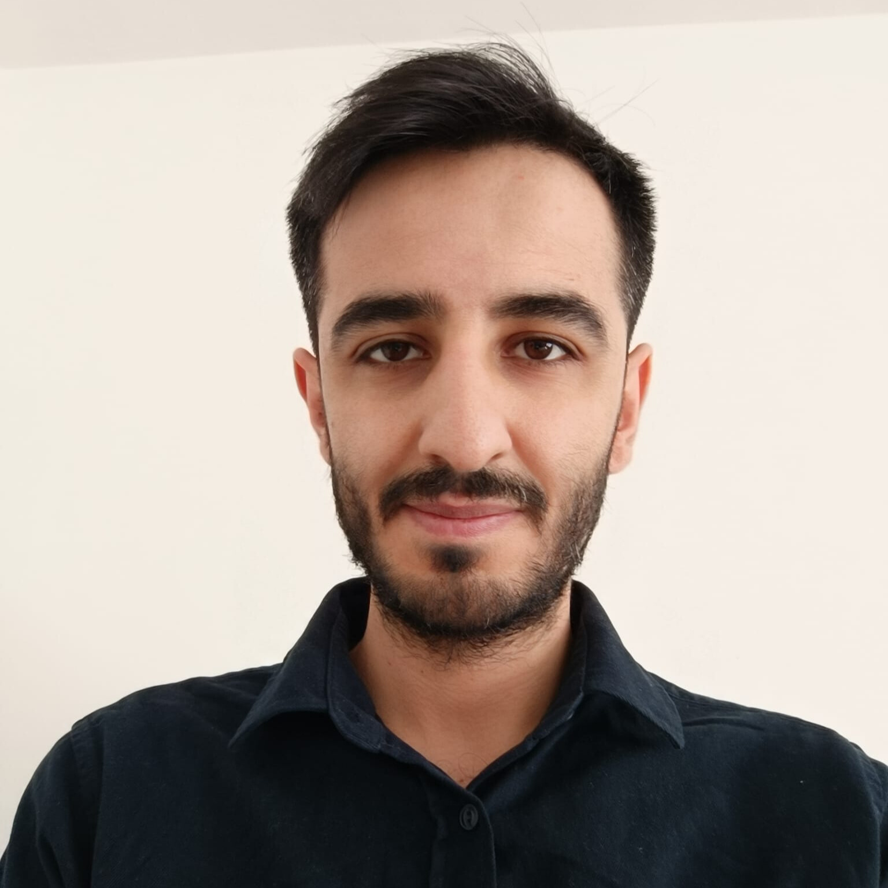
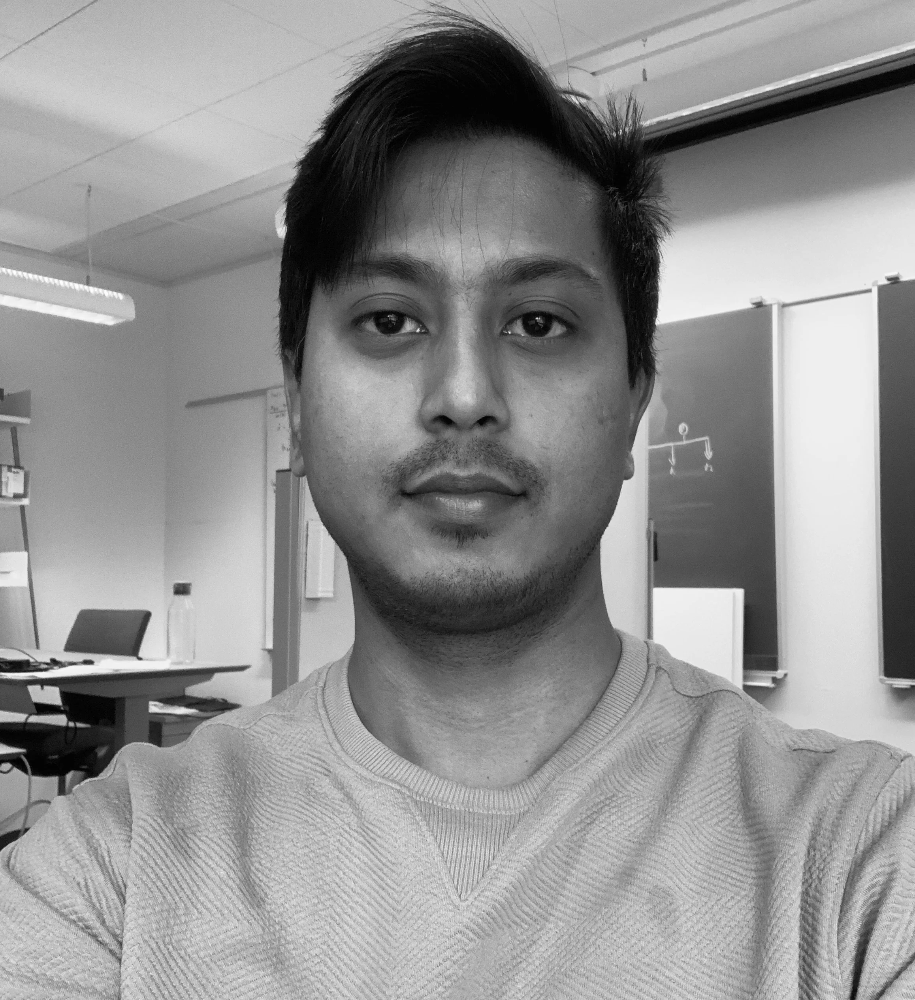
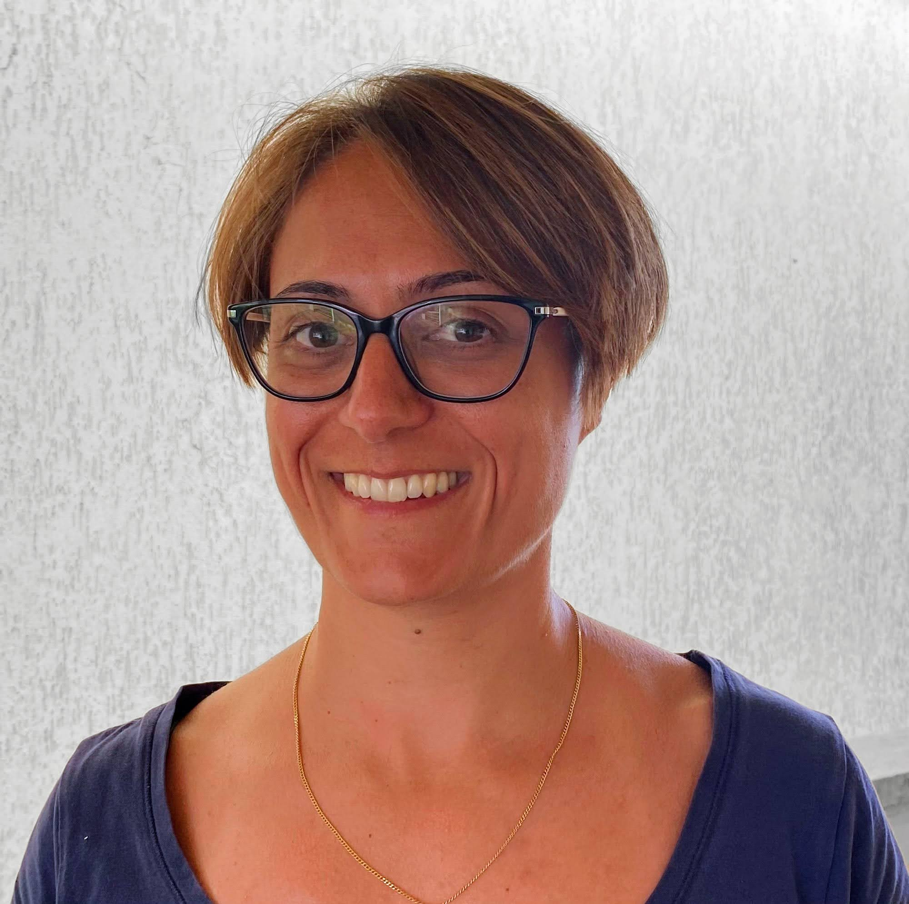
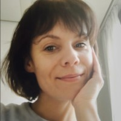
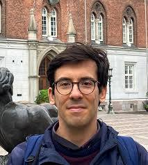

Mohamad Al Ahdab
Postdoctoral Researcher, Department of Electronic Systems, Aalborg University
Learning to act optimally in dynamical environments, where decisions shape future observations and uncertainty, is central to safe, data-efficient autonomous systems. From stabilizing and decarbonizing energy grids, to adaptive treatment in chronic care, to robotics and space exploration, society increasingly relies on dynamic decision-making systems that must trade off information acquisition and performance under safety, resource, and data constraints.
Concurrently, core ideas and tools for these challenges are advancing across several vibrant communities, including control and systems theory, statistical learning, online optimization and reinforcement learning, and formal models of learning and action. These approaches often adopt different assumptions, objectives, and techniques.
The P1 program, Learning and Optimal Control in Dynamical Systems, aims to build a sustained community to create a common language, surface shared problem structure, and enable systematic exchange of methods, open problems, and application-driven challenges. Additionally, the program seeks to catalyze theoretical insights and algorithmic advances, accelerating progress toward principled and scalable approaches for learning and optimal control in dynamical systems.
Beyond knowledge exchange, the ambition is to foster enduring collaborations across Denmark and the Nordics, seed joint research agendas, support cross-institutional teams, and enable coordinated efforts, including collaborative grant proposals and invited/special sessions at major conferences.

Postdoctoral Researcher, Department of Electronic Systems, Aalborg University

Assistant Professor, Department of Computer Science, University of Copenhagen

Assistant Professor, Department of Mathematics and Computer Science, University of Southern Denmark





Postdoc, Department of Electrical and Photonics Engineering
Technical University of Denmark

Associate Professor, Department of Electrical and Photonics Engineering
Technical University of Denmark

Associate Professor, Department of Applied Mathematics and Computer Science
Technical University of Denmark
Tenure-track Assistant Professor, Department of Computer Science
University of Copenhagen


Associate Professor, Department of Mathematics and Computer Science
University of Southern Denmark
Tenure-track Assistant Professor, Department of Mathematics and Computer Science
University of Southern Denmark

Postdoc, Department of Electrical and Computer Engineering
Aarhus University